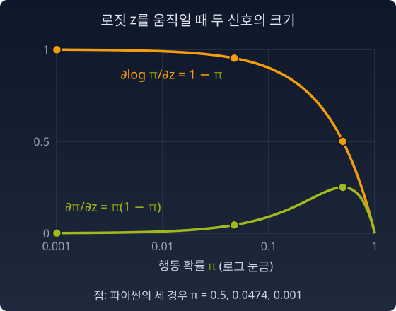

로그 기울기: 확률의 기울기에 log가 붙는 이유
강화학습(보상을 보고 행동을 고쳐 나가는 학습)에서 모델은 상황 s마다 행동 a를 고를 확률 π(a|s)를 가진다. 이 확률을 정책이라 부른다. 보상을 더 받도록 정책을 고치는 기울기, 곧 정책 기울기의 공식에는 늘 ∇log π가 나온다. 왜 그냥 ∇π가 아닐까?
연봉 인상률 — 절대 변화와 상대 변화
연봉이 3000만원인 사람의 300만원 인상과 3억인 사람의 300만원 인상은 같은 300만원이지만 의미가 완전히 다르다. 절대 변화량(∇p)이 아니라 상대 변화율(∇p/p = ∇log p)이 "진짜 변화의 크기"다.
왜 π로 나누는가
연봉 이야기는 느낌이다. 구조로 따져 보자. 정책이 행동 a를 확률 π(a)로 고르고 보상 r(a)를 받는다. 평균 보상을 올리고 싶으면 평균 보상의 기울기가 필요하고, 그것은 행동마다 ∇π(a) · r(a)를 모두 더한 값이다. 그런데 모든 행동을 다 해 볼 수는 없다. 손에 있는 것은 정책이 실제로 고른 행동 몇 개뿐이다. 그 표본의 평균으로 합을 어림하려면, 각 항을 그 행동이 뽑힐 확률로 나눠 두어야 한다. 드물게 뽑히는 행동은 드물게 나오는 만큼 크게 쳐 주어야 합이 맞기 때문이다.
가운데 식에서 π를 곱하고 나눈 것은 합을 "π에서 뽑은 표본의 평균"으로 바꾸기 위해서다. 남은 ∇π/π가 바로 ∇log π다. 로그는 편하려고 붙인 것이 아니라, 표본으로 기울기를 어림하려면 반드시 붙는다. 희귀한 행동의 신호가 커지는 것은 그 결과다.
ML에서: 정책 기울기와 기준값
스코어 함수 ∇_θ log p(x|θ)는 "파라미터를 살짝 바꿨을 때, 이 데이터가 나올 확률이 비율적으로 얼마나 변하는가"를 잰다. 정책 기울기 ∇_θ log π(a|s)에서는, π(a|s) = 0.001인 희귀 행동이 큰 보상을 줬을 때 ∇π로는 신호가 묻히지만 ∇log π = ∇π / π 에서는 작은 π로 나눠지면서 신호가 증폭된다. “희귀하지만 좋았던 행동을 놓치지 않는 장치.”
강화학습은 흔히 보상을 그대로 쓰지 않고, 평균 보상 같은 상수(기준값)를 뺀 뒤 기울기를 어림한다. 보상을 바꾸면 기울기도 바뀌지 않을까? 그래도 되는 까닭과 빼는 까닭은 아래 문제 12에서 직접 셈해 본다.
파이썬
행동이 둘인 밴딧(한 번 고르고 보상을 받는 가장 단순한 강화학습 문제)에서 softmax 정책의 한 로짓 z만 움직인다. 희귀한 행동일수록 ∇π는 사라지고 ∇log π는 1 근처에 남는다.
import numpy as np
# 2-행동 밴딧, softmax 정책. 행동 1의 로짓 z 만 파라미터로 본다.
for z in [0.0, -3.0, -6.9]:
pi1 = 1 / (1 + np.exp(-z)) # π(행동1) = e^z / (e^z + e^0)
d_pi = pi1 * (1 - pi1) # ∂π/∂z
d_logpi = 1 - pi1 # ∂log π/∂z = (∂π/∂z) / π
print(f"π = {pi1:.4f} ∂π/∂z = {d_pi:.4f} ∂log π/∂z = {d_logpi:.4f} 비율 {d_logpi / d_pi:7.1f}")
# π = 0.5000 ∂π/∂z = 0.2500 ∂log π/∂z = 0.5000 비율 2.0
# π = 0.0474 ∂π/∂z = 0.0452 ∂log π/∂z = 0.9526 비율 21.1
# π = 0.0010 ∂π/∂z = 0.0010 ∂log π/∂z = 0.9990 비율 993.3
π = 0.001인 행동에서 두 신호의 차이는 약 천 배, 곧 1/π다.

π가 작아질수록 ∂π/∂z는 π와 함께 0으로 사라지지만, ∂log π/∂z는 1 근처에 남는다. 두 곡선의 세로 간격이 곧 1/π배다.
정보기하학과의 연결
이 장에서 우리는 ∇log p의 분산이 피셔 정보임을 보았다. 피셔 정보 행렬 = E[∇log p · ∇log pᵀ]. “∇log p가 재료라면, 그 재료로 만든 분산이 파라미터 공간의 자, 곧 계량이 된다.” 그리고 이 자로 잰 같은 크기의 한 걸음 가운데 손실을 가장 많이 줄이는 방향으로 걷는 것이 자연 기울기(natural gradient)다.
수확
“확률의 기울기에 log가 붙는 것은, 정책이 뽑은 표본으로 모든 행동에 대한 합을 어림하려면 뽑힐 확률로 나눠야 하기 때문이다. ∇log π = ∇π/π가 그 나눗셈이고, 희귀한 행동의 신호가 커지는 것은 그 결과다. 이 재료의 분산이 피셔 정보, 곧 이 장의 자다.”
문제 11. 같은 0.01%p, 다른 뉴스
두 뉴스가 있다. 어느 희귀병에 걸릴 확률이 0.10%에서 0.11%로 올랐고, 감기에 걸릴 확률이 30.00%에서 30.01%로 올랐다. (가) 두 경우 모두 확률은 0.01%p 올랐다. 인구 100만 명인 도시에서 환자는 각각 몇 명 늘어나는가? (나) 길에서 그 병에 걸린 사람 한 명을 만났다. 이 한 사람은 "확률이 올랐다"는 쪽을 "그대로다"는 쪽보다 몇 배 더 지지하는가(두 확률의 비)? 그 비의 자연로그는 얼마인가? (다) (나)의 로그 값을 확률의 변화 0.0001로 나누고, 1/(원래 확률)과 견주어라.
함께 풀기

(가)는 100만 × 0.0001 = 100명씩이에요. 늘어난 환자 수가 똑같으니 같은 크기의 뉴스죠.

그럼 (나)요. 환자 한 명을 만났을 때 두 뉴스는 똑같이 들려요?

희귀병은 0.0011 / 0.0010 = 1.1배, 감기는 0.3001 / 0.3000 = 1.00033배예요. 희귀병 환자 한 명은 “올랐다” 쪽을 10% 더 지지하는데, 감기 환자 한 명은 거의 아무 말도 안 해요. 자연로그로는 0.0953과 0.00033이고요.

같은 100명이 늘었는데 왜 그렇게 달라요?
그 100명이 원래 환자 수에서 차지하는 몫은요?

희귀병 환자는 원래 1,000명이니까 10%가 늘었고, 감기 환자는 30만 명이니까 0.03%예요. 같은 100명이 한쪽에서는 큰 몫이네요.

(다)는 0.0953 / 0.0001 = 953이고 1/0.001 = 1000. 감기는 3.33과 3.33이에요. 로그 확률의 변화를 확률의 변화로 나누면 1/p에 가까워요. d log p/dp = 1/p니까요. 희귀병이 조금 어긋난 건 0.0001이 원래 확률의 10%라서, 아주 작은 변화라고 보기 어려워서예요.
그래요. 확률의 기울기에 1/p를 곱하면, 드문 일에서 생긴 작은 변화가 크게 드러나요. ∇log π가 하는 일이 이거예요.
10점 받던 친구가 11점을 받은 것과 90점 받던 친구가 91점을 받은 걸 똑같이 "1점 올랐다"고 보고서에 쓰면 안 되는 거랑 같네요.
문제 12. 기준값을 빼도 되는가
행동이 둘인 밴딧에서 정책이 행동 1을 확률 π₁ = 0.2로, 행동 2를 0.8로 고른다(행동 1의 로짓 z 하나로 정해지는 softmax 정책). 행동 1의 보상은 3, 행동 2의 보상은 1이다. 행동을 하나 뽑아 g = (r − b) × ∂log π/∂z로 기울기를 어림한다. 여기서 ∂log π₁/∂z = 1 − π₁, ∂log π₂/∂z = −π₁이다. (가) b = 0일 때 두 행동에서 g는 각각 얼마이고, g의 평균과 분산은 얼마인가? 평균이 평균 보상 3π₁ + 1 × (1 − π₁)을 z로 미분한 참 기울기와 같은지 확인하라. (나) b = 1.4(평균 보상)일 때 같은 것을 구하라. (다) b = 10이면 어떻게 되는가? b는 어떻게 고르는 것이 좋은가?
함께 풀기
(가)는 행동 1이면 3 × 0.8 = 2.4, 행동 2면 1 × (−0.2) = −0.2. 평균은 0.2 × 2.4 + 0.8 × (−0.2) = 0.48 − 0.16 = 0.32예요. 참 기울기는 2 × π₁(1 − π₁) = 2 × 0.16 = 0.32. 맞네요. 분산은 0.2 × 5.76 + 0.8 × 0.04 − 0.32² = 1.08이고요.
(나)는 보상에서 1.4를 빼면 보상이 바뀌니까 기울기도 바뀌겠죠. 목표가 달라지잖아요.
계산해 보고 말해요.
행동 1은 1.6 × 0.8 = 1.28, 행동 2는 −0.4 × (−0.2) = 0.08. 평균은 0.256 + 0.064 = 0.32. 그대로예요. 왜죠?
빼는 부분만 따로 보면 −b × (∂log π/∂z의 평균)이야. 그 평균은 0.2 × 0.8 + 0.8 × (−0.2) = 0이고. 문제 2에서 본 스코어의 평균 0이랑 같은 거야. 무엇을 빼도 평균에서는 사라져.
평균이 같다면 무엇이 달라졌어요?
분산이요. 0.2 × 1.28² + 0.8 × 0.08² − 0.32² = 0.23. b = 0일 때 1.08의 5분의 1쯤이에요. 같은 표본 수로 참 기울기에 훨씬 가까이 붙어요.

(다)는 b = 10이면 −5.6과 1.8이라 평균은 −1.12 + 1.44 = 0.32로 또 그대로인데, 분산이 8.76이에요. 아무 값이나 빼면 오히려 나빠지네요. 그러면 b는 어떻게 골라야 하죠?
두 행동의 g가 서로 다를수록 출렁이는 거죠. 둘을 같게 만드는 b가 있을까요?
(3 − b) × 0.8 = (1 − b) × (−0.2)를 풀면 b = 2.6이에요. 그러면 g가 두 행동 모두 0.32라서 분산이 0이에요. 어느 행동을 뽑아도 참 기울기가 그대로 나와요.
행동이 둘뿐이라 가능한 일이에요. 행동이 많고 보상도 흔들리는 실제 문제에서는 분산을 0으로 만들 수 없어서, 흔히 (나)처럼 평균 보상을 기준값으로 써요. 그것만으로도 분산이 5분의 1이 됐고요.
모의고사 원점수 대신 평균과의 차이를 보면 과목마다 다른 난이도가 빠지고 내가 잘했는지 못했는지만 남는 거랑 같네요. 기준값이 평균을 안 바꾸는 건 문제 2의 식이고, 흔들림을 줄이는 건 값을 잘 골라야 하는 일이었어요.